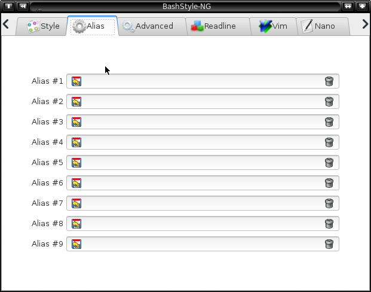

Chapter 2: Alias Settings

2.0 Aliases
Aliases allow a string to be substituted for a word when it is used as the first word of a simple command.
Example: ..=cd ../
Now then issuing `..', `cd ../' will be executed instead.
(Note: Define Aliases in BashStyle-NG without ' or " characters!)
2.1 Default Aliases
A set of aliases, set by default, regardless of user settings:
`reload' -- `source ~/.bashrc' -- reloads bash-configuration
`rd' -- `pwd -P' -- if the current directory is a symlink, `cd' into the real directory
`ls' -- `ls -CF --color=USERSETTING --group-directories-first' -- `ls' with color (if user-set), display directories before files*
* for more `ls' variants, check Chapter 08.